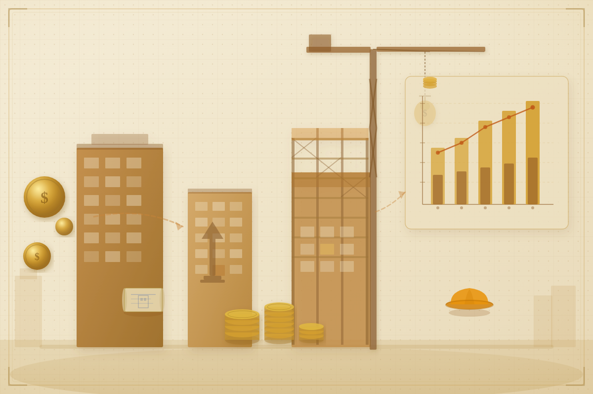

Managing Cash Flow in Construction Projects: Strategies for Sustainable Profitability
In the construction industry, profitability does not always guarantee liquidity. A company may show strong project margins on paper, yet struggle to pay vendors, subcontractors, or payroll on time. This is why managing cash flow in construction projects is one of the most critical aspects of financial success.
Construction businesses operate in a unique environment where expenses occur upfront, while payments are often delayed due to billing cycles, retainage, and approval processes. Without structured construction of cash flow management, even profitable companies can face financial pressure.
Let’s explore why cash flow management is challenging in construction and how firms can build a stronger, more predictable financial structure.
Why Cash Flow Is a Major Challenge in Construction
Unlike many industries, construction projects involve
- High upfront material purchases
- Ongoing labor expenses
- Subcontractor payments
- Equipment costs
- Delayed client payments
Additionally, most projects rely on the progress of billing in construction, where payments are tied to the completion of milestones. This creates timing gaps between cash outflows and inflows.
If these timing gaps are not managed strategically, companies may experience:
- Vendor payment delays
- Increased borrowing
- Strained supplier relationships
- Slowed project execution
Strong construction of cash flow management bridges this gap.
Common Cash Flow Problems in Construction Projects
1. Delayed Client Payments
Client approval processes, documentation errors, or incomplete billing submissions often delay payments.
Even small delays can disrupt payroll cycles and supplier commitments.
2. Underbilling or Overbilling
Improper revenue tracking can lead to:
- Underbilling, where earned revenue exceeds billed amounts
- Overbilling, where billings exceed work completed
Both situations distort financial visibility and impact liquidity planning.
3. Poor Job Cost Tracking
Cash flow issues are often rooted in inaccurate cost tracking.
If project expenses are not recorded in real time:
- Budget overruns go unnoticed
- Profit margins shrink unexpectedly
- Cash reserves decline
Accurate job costing strengthens overall construction project profitability.
4. Retainage Withholding
Retainage is common in construction contracts. A portion of payment is withheld until project completion.
While retainage protects clients, it places temporary financial strain on contractors.
Without proper planning, retainage can significantly affect working capital.
Strategic Approaches to Managing Cash Flow in Construction Projects
To maintain financial stability, construction firms must move from reactive to proactive cash flow management.
1. Implement Detailed Cash Flow Forecasting
Cash flow forecasting in construction should be done at both company-wide and project-specific levels.
Forecasting should include:
- Expected billing milestones
- Projected material purchases
- Labor cost projections
- Retainage schedules
- Vendor payment timelines
Regular forecasting allows leadership to anticipate shortages before they occur.
2. Strengthen Progress Billing Processes
Progress billing must be accurate, timely, and fully documented.
Best practices include:
- Submitting invoices immediately upon milestone completion
- Verifying percentage-of-completion calculations
- Ensuring change orders are included
- Tracking unpaid invoices actively
Efficient billing directly improves the construction of cash flow management.
3. Negotiate Favorable Payment Terms
Construction companies can improve liquidity by:
- Negotiating faster payment terms with clients
- Aligning vendor payment schedules with receivables
- Securing milestone-based advance payments where possible
Balanced payment structures reduce working capital pressure.
4. Monitor Work in Progress (WIP) Reports
WIP reporting plays a critical role in managing cash flow.
By reviewing WIP reports monthly, companies can identify:
- Underbilling positions
- Cost overruns
- Revenue recognition gaps
Strong financial visibility supports better liquidity planning.
5. Control Project Cost Overruns Early
Every unexpected cost directly impacts cash reserves.
To protect construction project profitability:
- Review budgets regularly
- Track labor productivity
- Monitor material price fluctuations
- Update cost-to-complete estimates
Early cost control prevents cash flow disruption later in the project.
6. Maintain a Working Capital Buffer
Construction businesses should maintain sufficient working capital to cover:
- At least 2–3 months of fixed operating expenses
- Payroll cycles
- Vendor commitments
A financial buffer reduces dependence on short-term borrowing.
The Role of Construction Accounting in Cash Flow Management
Strong construction accounting systems are essential for maintaining liquidity.
Accurate financial reporting ensures:
- Revenue aligns with project progress
- Expenses are recorded properly
- Billing cycles remain consistent
- Forecasts reflect real data
As projects grow in size and complexity, many firms strengthen their financial systems by partnering with specialized accounting providers like Wise Bridge Global.
Their construction-focused financial support helps firms with:
- Cash flow forecasting
- Progress billing management
- Job cost tracking
- WIP reporting
- Financial analysis and reporting
This structured approach improves financial visibility and allows construction leaders to focus on operational excellence.
Why Managing Cash Flow Determines Long-Term Success
Construction companies rarely fail due to lack of work. They fail due to poor cash flow control.
Even profitable projects can create financial stress if:
- Billing is delayed
- Costs exceed projections
- Retainage accumulates
- Forecasting is weak
Effective construction cash flow management ensures:
- Stable operations
- Strong vendor relationships
- Confident project expansion
- Sustainable growth
Managing cash flow in construction projects requires more than tracking expenses; it requires strategic financial planning, disciplined billing processes, accurate job costing, and consistent forecasting.
Construction firms that prioritize cash flow management build resilience against market volatility and project uncertainty.
In construction, profitability may be measured in margins, but stability is measured in cash flow.
Companies that master both achieve long-term financial strength.